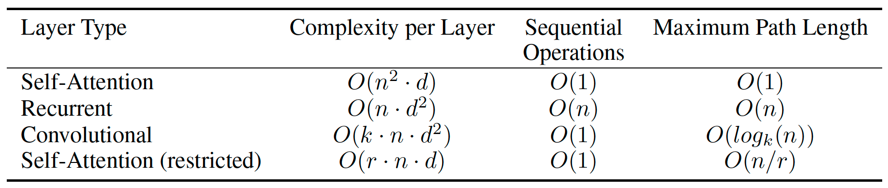

Transformer
Transformer has become the most prevailing model in the field of sequence modeling since publishing thanks to its capability to efficiently handle long-range dependencies (LRD). By leveraging the attention mechanism, Transformer successfully addresses the main drawbacks of previous CNN and RNN approaches and achieve state-of-the-art performance in various long sequence handling tasks across several fields including natural language, video, and music. Through this article, I aim to deliver a concise elaboration on the Transformer model, providing a thorough understanding about how it achieve achieve effective sequence modeling.
Limitations of CNN & RNN
Before Transformer, sequence modeling tasks are majorly tackled with CNNs and RNNs, which both are straightforward choices with regard of their natures. The sliding kernels of CNNs capture necessary information from the input data, and the recurrence of RNNs enables the reuse of past information. However, these behaviors come with fatal shortcomings when handling very long sequences. CNNs do not keep track of the positions of extracted features, and hence the number of operations required to relate information from two arbitrary input or output positions grows in the distance between them, resulting in significantly large computational costs when dealing with long sequences. Meanwhile, RNN’s sequential nature precludes parallelization within training samples, which becomes critical at longer sequence lengths as memory constraints limit batching across samples.
Nonetheless, we can still mark some necessary characteristics for an effective sequence modeling methodology. First, it must perform some form of feature extraction or encoding from the input sequence. Second, It must keep track of the positions of the features to accurately capture the relationship between features. Lastly, it must reuse its current output for future predictions to keep track of the sequential dependencies, just like RNN.
In the next sections, we will go through the key components of the Transformer and learn how they deliver the required features respectively.
Attention
Transformer leverages the attention mechanism to perform a new approach of feature extraction from the input sequence. Attention allows an element to “attend” to different parts of the sequence and dynamically determine the weights or importance/attention scores. Better than RNN which encode everything in “black box” state vectors, we are able to visualize the learned parameters throughout training and evaluation processes and observe how the model actually behaves. As this concept is similar to CNN, Cordonnier et al. [5] conducted a study showing an equivalent relationship between self-attention and convolution.
Attentions can be computed within the same sequence or between different sequences. Attentions computed within the same sequence, also known as self-attention, captures the dependencies of an element on other parts of the sequence. With the similar idea, attentions computed across different sequences models the connection between an element and the other sequence.
Attention is computed with the following formula
where Q, K, V stands for query, key, and value vectors, respectively. The query vector represents the element that is attending the sequence. The key vector represents the importance of each part of the sequence that is going to be attended with respect to the query vector. Lastly, the value vector represents the information that should be retrieved from the sequence. Putting them all together, we can easily tell that the formula determines the output from the value vector with the importance obtained via the scaled dot product between query and key vectors. All query, key, and value vectors are derived from the input vector through corresponding projection matrices learned via training.
To further utilize attention to model complex patterns, multi-head self-attention (MHSA) is proposed to capture information from different abstraction levels.
Given h attention heads, the input sequence is projected to query, key, and value vectors h times with h different learned linear projections of corresponding dimensionalities in parallel. Then, concatenate the h attention outputs and project again to encode all essential characteristics in the final output.
Positional Encoding
In order to incorporate positional information into attention computation, Vaswani et al.[1] employed the absolute sinusoidal positional encoding to embed raw position in a latent space.
In future studies, researchers implemented different encoding approaches such as learned positional encoding and relative positional encoding. These topics will be discussed in the next article talking about Efficient Transformers. In conclusion, by adding the positional encoding results to the input embeddings, the attention mechanism is able to take positional information into account and acquire more accurate sequential feature representations.
Model Architecture
Finally, with the concept of attention and positional encoding in mind, we are able to dive into the data flow and architecture of the Transformer.
The model consists of two major components: encoder and decoder. The encoder extracts information from the input sequence with MHSA, and result in a series of encoder output states, where each state represents a token in the input sequence. Then, at every timestep, the decoder takes in an encoder output state and the current predicted sequence to obtain the next token prediction. This data flow enables Transformer to present a recurrence manner and reuse its current output for future prediction just like RNN.
The encoder is in charge of learning the features, dependencies, and relationships within the input sequence and encodes them into encoder states as output. The encoder can be decomposed into a MHSA layer plus a position-wise fully-connected feedforward layer, with residual connections around each layer following by layer normalization.
The structure of the decoder is slightly different from the encoder as it contains two multi-head attention layers. The masked MHSA layer learns features and relationships from the current output sequence, and the mask ensures predictions for position i can depend only on the known outputs at positions before i. The other multi-head attention layer takes in the output of the masked MHSA layer and encoder output states one at a time to obtain prediction.
In summary, Transformer successfully presents the three characteristics mentioned earlier about a effective sequence model. Through the leveraging of attention mechanism and positional encoding, Transformer is able to extract and model sequential features with the consideration of positions. Additionally, the model architecture is designed to recreate the recurrence manner, enabling Transformer to generate reasonable predictions regarding of the input and current output.
Performance & Complexity
The graph above depicts the performance of several effective CNN- and RNN-based models as well as the Transformer in a machine translation task. We can easily observe that Transformer achieves the best performance while requiring the least training cost. This performance makes Transformer the top candidate in sequence modeling as we are able to obtain high-quality outcomes in a short time.

In this section, we will take a look at the performance of Transformer and discuss how self-attention make Transformer more preferable on sequence modeling tasks from the complexity aspect.
The main difference between CNN, RNN, and Transformer is the strategies they use to handle sequential features. The image above depicts the complexities of self-attention, convolution, and recurrent layers during training and inferencing, where n, d, and k stands for sequence length, representation dimensionality, and kernel size, respectively. In most cases, we work under the condition where n is smaller than d, and hence making self-attention layers have the smallest complexity during training. Self-attention can further be restricted to focus on a neighborhood of size r when dealing with very long sequences to further decrease the training cost. while separable convolution layer can reduce layer complexity, its optimal complexity is still identical to self-attention layer.
Another remarkable point about the table above is the maximum path length. The key factor affecting the ability to learn LRD is the length of the paths forward and backward signals have to traverse in the network. The shorter the path, the better the learning quality. Convolution networks require a stack of layers to connect all pairs of input and output positions, increasing the longest paths between any two positions in the network. Similar behavior appears for RNNs as they gradually forget long-term memory, and hence backward traversals are necessary for memory retrieving. For self-attention, every element attend to every part of the sequence in one single layer, consequently neglect the need of stacked layers or backward traversals. Even if we restrict self-attention to focus on a fixed-size neighborhood, the max path length scales by only a constant.
From both theoretical and empirical perspectives, we proved that Transformer is more powerful while more cost-friendly. Transformer combines the advantages of CNNs and RNNs and set up a new benchmark for sequence models. Several extensions of Transformer have been proposed to tackle different fields of sequential data like video and music and achieve state-of-the-art performances.
Conclusion
In this article, we went through the core of the Transformer, learning about the mechanics that enable its dominance in the field of sequence modeling. Despite of the powerfulness, Transformer comes with some drawbacks. The computational and memory complexity scale quadratically to the length of the input sequence, which hinders its efficiency and effectivity to handle long sequences in practice. Additionally, Transformer is only able to handle unidirectional patterns given its model architecture, and thus it performs poorly on tasks presenting bidirectional patterns like question answering. In the next article, I will write about some well-known efficient Transformers and discuss how they enhance the vanilla Transformer.
Citation
- Ashish Vaswani, , Noam Shazeer, Niki Parmar, Jakob Uszkoreit, Llion Jones, Aidan N. Gomez, Lukaz Kaiser, Illia Polosukhin, “Attention Is All You Need” arXiv: 1706.03762v7 [cs.CL] 2 Aug 2023
- Mostafa Dehghani, Stephan Gouws, Oriol Vinyals, Jakob Uszkoreit, Lukasz Kaiser “Universal Transformers” arXiv:1807.03819v3 [cs.CL] 5 Mar 2019
- Angelos Katharopoulos, Apoorv Vyas, Nikolaos Pappas, François Fleuret, “Transformers are RNNs: Fast Autoregressive Transformers with Linear Attention”, arXiv:2006.16236v3 [cs.LG] 31 Aug 2020
- Yao-Hung Hubert Tsai, Shaojie Bai, Makoto Yamada, Louis-Philippe Morency Ruslan Salakhutdinov “Transformer Dissection: A Unified Understanding of Transformer’s Attention via the Lens of Kernel”
- Jean-Baptiste Cordonnier, Andreas Loukas, Martin Jaggi, “On the Relationship Between Self-Atention and Convolutional Layers” arXiv:1911.03584v2 [cs.LG] 10 Jan 2020